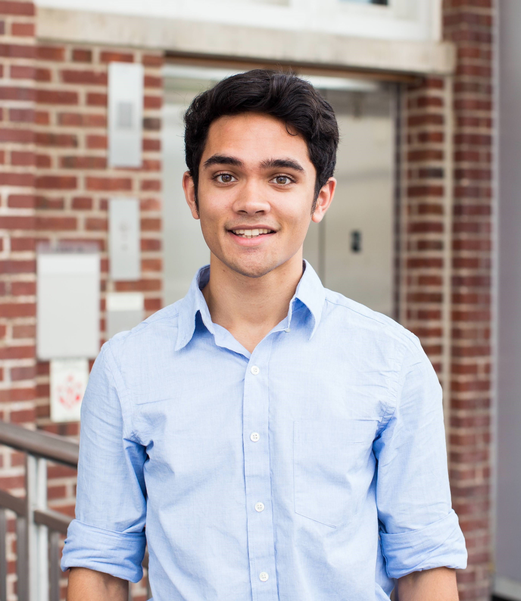
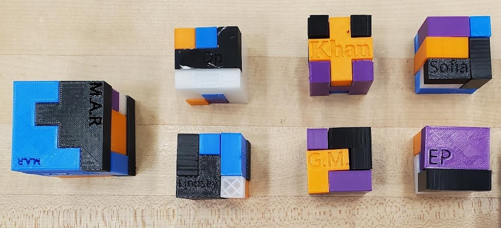

|  |
Russell Martin
PhD Student |
Hi there! My name is Russell, I'm a PhD student working in the Stanford Biomechatronics Lab. In my graduate training, I am specializing in controls, mechatronics, and optimization, and am applying these technical skills in the development of robotic exoskeletons that assist walking. My research has specifically focused on (1) improving the speed and accuracy of human-in-the-loop exoskeleton optimization in the presence of noise and (2) investigating exoskeleton control strategies for assisting people who have had a stroke. In the long term, I am excited about working at the interface between hardware and software, particularly in the development of systems that involve human-machine interaction, autonomy, and/or optimization.
Journal papers

|
Improving CMA-ES convergence speed, efficiency, and reliability in noisy robot optimization problems RM Martin, SH Collins In review at Evolutionary Computation |
|
Comparing optimized exoskeleton assistance of the hip, knee, and ankle in single and multi-joint configurations PW Franks, GM Bryan, RM Martin, R Reyes, AC Lakmazaheri, SH Collins Wearable Technologies, 2021 [article] [pdf] |
|
Drug repositioning in epilepsy reveals novel anti-seizure candidates L Brueggeman, ML Sturgeon, RM Martin, AJ Grossbach, Y Nagahama, A Zhang, MA Howard III, H Kawasaki, S Wu, RA Cornell, JJ Michaelson, AG Bassuk Annals of Clinical and Translational Neurology, 2019 [article] [pdf] |
Selected conference presentations and posters
|
Expediting human-in-the-loop optimization RM Martin, SH Collins Talk presented at: Dynamic Walking, 2023, Munich, Germany [video abstract] |
|
Identifying the best two-joint combination of hip, knee, and ankle exoskeleton assistance RM Martin, PW Franks, GM Bryan, AC Lakmazaheri, SH Collins Poster presented at: Dynamic Walking, 2021, Virtual [poster] |
|
The effect of joint angle and contraction velocity on measured muscle activation at the elbow and knee RM Martin, LA Frey Law Poster presented at: Biomedical Engineering Society, 2019, Philadelphia, PA [abstract] |
Other projects

|
Wheeled basketball-playing robot I was part of a team of 3 students that designed a robot that autonomously navigated a course and shot balls into a basket. In this competition, we finished 2nd of 10 teams. I used Onshape for CAD, I programmed a PIC32 using C, and I used KiCad for schematic design. [website] |
|
Predicting knee contact force using machine learning I was part of a team of 2 students that built a machine learning model using Scikit-Learn to predict the joint contact force in the knee during walking, an important indicator in the development of osteoarthritis. [poster] [paper] |
|
AI model for playing Risk I built a Deep-Q reinforcement learning model that played the game Risk using TensorFlow. [video] [github] |

|
Mars rover I was the president and mechanical team lead of the UI Robotics Club. We built a Mars rover capable of terrain traversal, autonomous operation, and manipulation. I oversaw the mechanical design of the chassis and end-effector, including CAD, manufacturing, and problem-solving. I led the club to its first competition appearance at the Canadian International Rover Competition. |
|  |
3D Printing Volunteer Teacher I co-led a semester-long effort to teach a group of middle schoolers the basics of 3D printing in collaboration with Foundation for a College Educuation. Students learned design sketching, CAD, and tolerancing, and at the end of the semester, designed and built their own puzzle cubes. |